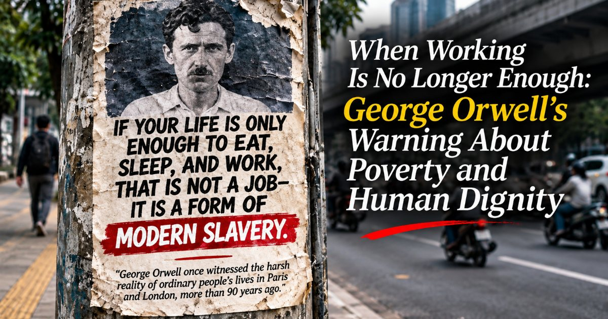
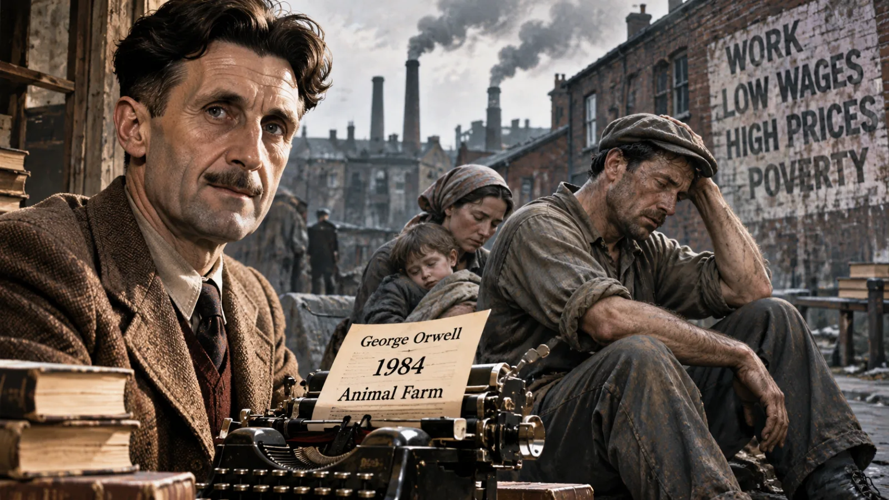
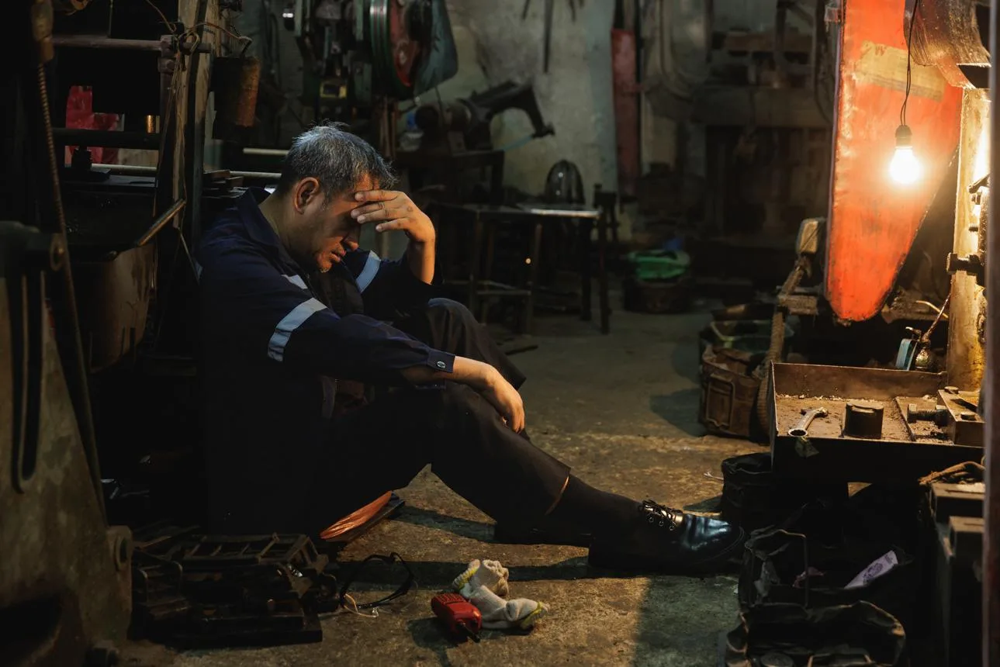

When Working Is No Longer Enough: George Orwell's Warning About Poverty and Human Dignity
Through his experiences among poor workers in Paris and London, George Orwell explored a reality that still matters today: when every wage is consumed by basic needs, life can become a cycle of work and survival.
8 min read · 2026-11-21

Imagine someone who wakes up every morning, gets ready for work, spends most of the day earning a living, and returns home exhausted. Once paid, nearly all of the money goes toward essentials: food, housing, and other basic needs. There is little room to save, little opportunity to enjoy life, and sometimes barely enough time to think about the future. The next day, the cycle begins again. This is not only a modern concern. Nearly a century ago, the English writer George Orwell witnessed the hardship faced by ordinary people living in poverty in Paris and London. He later drew on those experiences in Down and Out in Paris and London, published in 1933. His account reminds us that poverty is far more complicated than simply having too little money.
George Orwell and Life on the Margins
George Orwell is remembered as a writer who examined social injustice, power, and the lives of ordinary people. Before he became widely known for his books, however, he experienced periods of severe financial hardship himself.
In the late 1920s, Orwell spent time in Paris under difficult economic circumstances. He lived among people struggling with poverty and worked in the kitchens of hotels and restaurants. These experiences allowed him to observe a world that was often hidden from people who lived more comfortably.
Behind the polished dining rooms of restaurants were kitchen workers who spent long hours in exhausting conditions. They worked amid heat, pressure, and demanding routines. For many, a job was not a path to a career or a personal dream; it was simply a way to afford food and keep a place to sleep.
Orwell later turned his experiences and observations in Paris and London into Down and Out in Paris and London, a book that brought the lives of poor and precariously employed people into view.

powerful reflection on George Orwell’s warning: when hard work is no longer enough to escape poverty, human dignity is put at risk.
Poverty Is About More Than Having No Money
When people talk about poverty, the first thing that often comes to mind is not having enough money. Yet the reality Orwell described points to a much wider problem.
Poverty can also mean having very few choices. A person may have a job, receive wages, and work hard to meet their responsibilities. But if nearly all of that income is consumed by basic necessities, the opportunity to change their circumstances can remain painfully limited.
They may want to continue their education, learn a new skill, start a small business, or save for the future. Those plans, however, can be pushed aside by expenses that cannot wait. Food must be bought. Rent must be paid. Family needs must be met.
In such circumstances, a person can spend almost all their time and energy maintaining the same standard of living from one day to the next. One of the less visible dimensions of poverty is therefore not only a shortage of resources, but also a shortage of opportunities to shape one's own future.
Poverty is not simply about having too little money. It is also about having too few choices, limited opportunities, and the constant struggle to meet basic needs.Continue Reading →
A Cycle That Is Difficult to Break
One of the most exhausting realities for people on low incomes is the cycle of recurring necessities. A person works to earn money, uses that money to cover essential expenses, and then needs another paycheque to get through the next stretch of life.
The problem is not necessarily a lack of effort. Many people devote most of their time and strength to their jobs. Yet hard work does not always produce an equivalent improvement in financial security.
When almost all income is spent on essentials, there is little room to deal with an emergency. A job loss, an unexpected medical bill, or a rise in the cost of food can destabilise an entire household.
People in this position are not only trying to get through today. They may also carry constant uncertainty about tomorrow. For some families, that pressure can continue for years and can shape the opportunities available to the next generation.
For many workers, each day brings the same struggle: work to earn a living, spend nearly everything on necessities, and return to work the next day with little chance to move forward.
When a Job Does Not Provide a Decent Life
Work should be one of the ways people build a better life. Through employment, people hope to earn an income, find security, support their families, and gain opportunities to develop.
But not every job provides the same possibilities. Some people work long hours and still struggle to meet basic needs. Others have little protection when an economic setback occurs.
This shows why having a job is not, by itself, a guarantee of well-being. It also matters whether wages can cover the cost of living, whether workers have time to rest, and whether they have a realistic opportunity to improve their circumstances.
That is one reason Orwell's observations remain relevant. Although the world has changed dramatically since the 1930s, questions about work, poverty, and human dignity remain important.

Having a job does not always guarantee financial security. When wages cannot cover basic needs and working conditions remain difficult, employment can become a struggle for survival rather than a path toward a better future.Continue Reading →
Is Modern Life Really That Different?
The world has changed rapidly. Technology allows people to work remotely, communicate across continents, and access opportunities that would once have been difficult to imagine.
Yet progress has not automatically eliminated poverty. In many places, people still spend most of their income on basic necessities. Some workers take additional jobs simply to keep their households going. Others have steady employment but too little savings to withstand an emergency.
These realities remind us that a society's progress should not be measured only by technology, tall buildings, or economic growth. We should also ask what life is like for the people whose labour helps sustain that progress.
Do they have a genuine chance to improve their lives? Does their work provide security? Do they have enough time and freedom to enjoy life? Development should create opportunity more widely, not only prosperity for a fortunate few.
Technology has transformed the modern world, but financial insecurity remains. Many people still work long hours and struggle to afford housing, food, and other basic necessities.
Human Dignity Means More Than Survival
One important lesson we can take from Orwell's experiences is that poverty should not be treated merely as a number in an economic report. Behind every number is a human being.
There may be a father working all day for his family, a mother carefully stretching a household budget, or a young person with ambitions that must be postponed because of financial circumstances.
These are not necessarily people who lack the desire to move forward. Often, they lack the resources and opportunities needed to take the next step.
A decent life should mean more than being able to eat and having somewhere to sleep. People also need opportunities to learn, time to rest, relationships with family and friends, the freedom to pursue goals, and a reason to hope for the future.
Work should support human life. It should not consume a person's entire existence.
A decent life means more than having enough money to survive. It means having time for family, opportunities to grow, the freedom to pursue dreams, and the dignity to enjoy the results of our hard work.
Nearly a century has passed since George Orwell described the lives of poor people in Paris and London. The world has changed. Cities have become more modern, technology has advanced, and new opportunities have emerged. Yet the problems of poverty, insecure work, and the struggle for a decent life have not disappeared.
Orwell's experiences encourage us to look beyond appearances. Someone who leaves for work every morning may be carrying worries about the cost of living, the future of their family, and hopes that have not yet come true.
A good life should not be measured only by how long a person can work or how much effort they can give. It should also leave room for people to grow, dream, and enjoy the benefits of their labour.
Human beings were not born merely to work, eat, sleep, and repeat the same routine without end. They deserve the opportunity to live a life with meaning.
— Jaziel Story